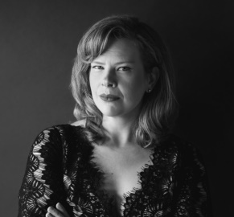
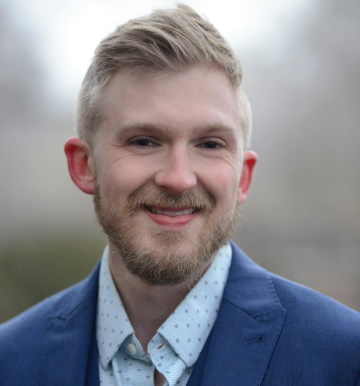
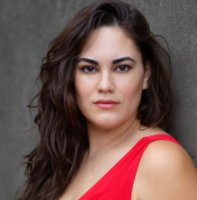
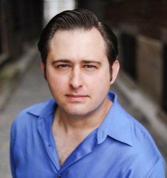
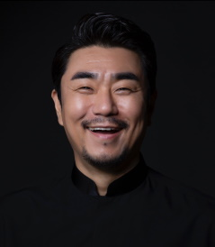
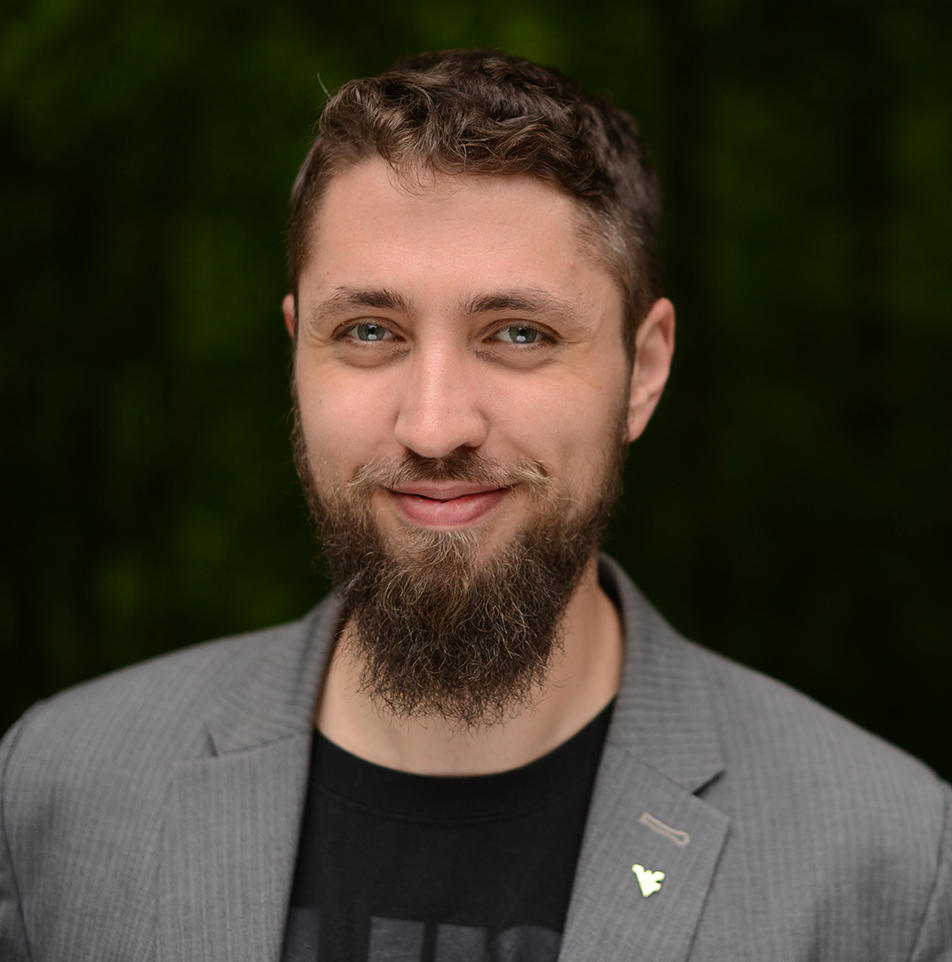

Bethann Dilione (Berta) is thrilled to return to the stage with DVOC for her third summer. She is soprano soloist and section leader at the Church of the Good Samaritan. A sought-after and versatile musician, Bethann performs in many genres from opera and sacred music to musical theater. She performs with local groups including Vox Amadeus, the Brandywine Singers and Olde Towne Carolers. On stage Bethann played Nedda in I Pagliacci, Antonia in Tales of Hoffman, and Mother Jeanne in Dialogues of the Carmelites with Delaware Valley Opera Company.

Noah Donahue (Almaviva) tenor, hails from Huntingtown Maryland and currently resides in
Philadelphia, Pennsylvania. Recent performance highlights include the role of Don Basilio in Mozart's Le Nozze di Figaro, Rodolfo in Puccini’s La Bohème, Alfredo Germont in La Traviata and Carnegie Hall debut with Vincerò Academy in their "Gala Concert at Weill Recital Hall,” the role of Jacob in the world premiere opera film The Golem of Prague with the University of Florida in collaboration with the UF School of Digital Worlds, Raymond in Tchaikovsky's Maid of Orleans, and Vladimir in Borodin's Prince Igor.
Noah received a Bachelors in Vocal Performance from Indiana University and a Masters from the University of Florida. He can be heard singing at the Victor Café in south
Philadelphia as well as with the New Jersey Masterchorale and Philadelphia Orchestra
Symphonic Choir. He also works as an artistic advisor for Opera Magnifico, a rising opera company based out of Gladstone, New Jersey dedicated to reinvigorating audiences with the vocalism of the golden age of opera.

Emilie Merritt (Rosina) mezzo soprano, now a resident of Philadelphia, is from El Paso, Texas where she studied with Brian Downen at the University of Texas at El Paso. Most recently she was a Resident Artist with El Paso Opera (‘19-‘22). Her past role credits include Papagena in The Magic Flute, Geraldine in A Hand of Bridge and La Zelatrice in Suor Angelica, and as the widow Catherine in Pippin.
Merritt “Possesses a strikingly beautiful mezzo-soprano voice that is both powerful and flexible…[she] commands an extensive palate of vocal colors” In the 2024/25 summer season, she looks forward to debuting the role of Carmen with ISOFOM in Morelia, Mexico and making her role and company debut as Rosina in Il Barbiere di Siviglia by Rossini with the Delaware Valley Opera Company.

Bass-baritone Matthew Lulofs(Bartolo) has been praised for his “aptly lush and unctuous tone.” His operatic roles include Don Alfonso in Così fan tutte, Escamillo in Carmen, Alfio in Cavalleria rusticana, Michele in Briscula the Magician, and the title role in Don Giovanni. An accomplished chorister as well as a soloist, Mr. Lulofs frequently appears with Vox Ama Deus and has also performed with the Opera Philadelphia chorus. He holds a B.M. from the San Francisco Conservatory of Music and an M.M. from Temple University. He currently studies with Kevin Langan.

Gerard Taeeun Moon (Figaro) baritone, has been praised by Operawire as “From the moment he walked on stage it was evident that this was a singer with authority and command and incredible stage presence,” by InForum as “A rich baritone,” and Lexington Herald-Leader as “A strong voice, impeccable diction, and a huge sense of fun.”
Mr. Moon’s unique and flexible voice allows him to tackle many of opera’s most challenging baritone roles. He has performed the role of Figaro in Il barbiere di Siviglia, Germont in La Traviata, Ford in Falstaff, Don Giovanni and Leporello in Don Giovanni, Il Conte in Le Nozze di Figaro, Schaunard in La bohème, Dr. Miracle/Coppélius in The Tales of Hoffmann, Belcore in L’Elisir d’amore, French General in Silent Night, Yamadori in Madama Butterfly, Osiride in Mose, and Dr. Falke in Die Fledermaus.
He performs internationally throughout the United States, Asia, and Europe and in the greatest venues including Prague Estates Theatre, Smetana Hall (Czech Republic), and Great Hall at Mozarteum (Austria).

John Scherch (Basilio) Bass John T.K. Scherch has appeared with DVOC as Elder McLean in Susannah, Omar in Abu Hassan, and Paquiro in Goyescas; he has also appeared as a soloist with the New Jersey Master Chorale, the Greater Philadelphia Choral Society, and the Reading Choral Society, among others. John also sings with the choruses of Opera Philadelphia and The Philadelphia Orchestra, and is on the roster of Philadelphia’s chapter of Opera on Tap. He has also performed with Washington, D.C.'s innovative theatre company IN Series, the Friday Morning Music Club, and Bel Cantanti Opera Company in various roles ranging from Sarastro in Mozart's Die Zauberflöte (his most-performed role) to both a traditional performance and a critically-acclaimed hybrid staging of the Verdi Requiem, as well as a world premiere by Frances Pollock. He has received praise from Opera News, the Pittsburgh Tribune-Review, and The Washington Post for his performances. John is the weekday morning classical host on WRTI 90.1 in Philadelphia.
johntkbass.com.